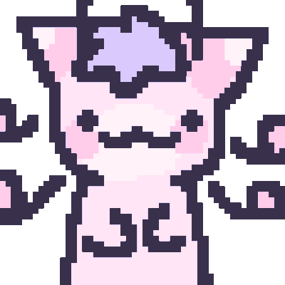

MiLKY's shrine on starrcats, the furry species made by Worm! All info given on this webshrine is by worm and all art is by worm unless stated otherwise. Info adapted from official Starrcat doc and worm's personal descriptions!
MiLKY's shrine on starrcats, the furry species made by Worm! All info given on this webshrine is by worm and all art is by worm unless stated otherwise. Info adapted from official Starrcat doc and worm's personal descriptions!
Starrcats are a silly species of alien cats that live on a planet called "mittykeow"! They are characterized by their cat like anthro appearance, cat-like ears, and their antennae. They are also characterized by their crescent moon tails!
These starrcats are the default. Vanilla settings if you will. If someone asked "what is a starrcat??", This is what description you 'd give em. They're a middle ground between the two other types of starrcats! They are usually fluffy in appearance and lean most towards the cat-like looks. Although there can be variations. Kind of like a blank canvas for starrcat making creativity!

These starrcats are unique, compared to the other types! They are incredibly good at swimming, along with having less fur for more fishy scales and fins! They also tend to have webbed paws, to increase their swimming efficiency! They also may have different scales and antennae! Most interestingly is that sometimes, their crescent moon GLOWS!!! (bioluminesence)

These starrcats have more bug-like features! They have compound eyes (usually solid colored, with a shiny outer layer), or sometimes even no eyes!, multiple limbs, and their fur is more flakey, with grub-like tails. They also tend to be smaller in stature compared to the others.

Yes you can! But you gotta follow some rules outlined by worm!
★ They all originate on Planet Mittykeow, speak a language very close to English! They also hatch from eggs (soft shelled). They also make similar noises and gestures to cats. They call "Earth" as "eerth" They try their best
★ They can be similar to the antennae of the creachers you base your starrcat off! Get silly! Maybe even put antennae on their face like they're whiskers :DDDDD
★ They can be style to look more round/pointed/fluffy/folded/etc, and can also have piercings and stuff!!
★ Their tails can be fluffy, scaly, hairless, grubby, or a mix of all!! They can have one tail, or maybe more!! When the tail is fluffy, its cropped on the end for the crescent moon! They can also have bioluminescent scales!
★ When starrcats are young, their crescent moons are actually full moons, and can ring like a little bell, in order for their parents to identify them in a crowd! Their moons become crescent when they come of age, and then fall off as soon as their time's up...
★ They have paws, with them being similar to cat paws! They have retractable claws and paw pads, which can help them grip stuff! They can be roundish in shape. Fish starrcats have webbed paws which help em swim better!
★ Some fish starrcats (along with some hybrids or other) have fins on their back, tail, or arms. These also help them with their swimming and can be bioluminescent too!!
★ They are either compound or non-compound! Non-compound ones are like human eyes, having irises or pupils, etc. Compound starrcat eyes are one color, and solid in color. Some starrcats also have more than 2 eyes or no eyes! The only rule is to keep it consistent!
★ No wings. No horns. They cant have 'em. You can give em fake ones but no biological wings. Please.
★ (NSFW) Starrcats can NOT have breasts. Feel free to give em a fluffy chest or spots on their belly!!
★ If you disobey these rules, Worm, alongside the entirety of the MiLKYWAY Systems staff will miku-miku-beam you into oblivion. DO NOT MAKE ANYTHING OFFENSIVE. WORM WILL EXPLODE YOU AND I WILL SEND YOU TO THE SHADOW REALM.
Here's some interesting tidbits about starrcats and their planet!
★ Planet Mittykeow is the home planet of the Starrcats! Located in the [SPINNY] system in the Milky Way Galaxy!
★ The planet is shaped like a cat's head, due to the large mountain peaks on the planet, suspected to have formed when the planet first formed. It appears to be purple and pink-ish in color, with an artificial ring around it, like Saturn.
★ It has 4 different scattered islands around the sea that covers the planet. The planet is also home to very interesting alien flora and fauna!
The coldest continent of Planet Mittykeow, with most areas having chilly temperatures, even in the warmer months! It is considered the 2nd biggest continent and houses the 2nd largest mountain on the planet. It is visible from space and it gives the planet it's cat-head appearance. This is also theorized to be the continent the first vanilla starrcats were said to live in.
A striking opposite of Keowld, as it is considered the hottest continent. Most of it is hot and desertlike, with dry winters in the colder months. It is the smallest of the 4 and is also where the first bug starrcats lived!
The most humid of the continents! This continent has varying temperatures based on the area. For the most part, it feels like a rainforest. It's covered in tall tropical trees and it rains quite a bit here. It is the third biggest continent, and is home to the first fish starrcats!
The temperatures here vary vastly. It usually isnt very abnormal though. It is also considered the biggest continent, housing the other mountain that completes the cat-ear planet! This continent was not inhabited by any specific starrcat, rather, it is home to the most diverse variety of starrcats!
★ The different plants and animals that roam this planet bear striking resemblance to ones on earth. This is just mere coincidence though.
★ There is a species on this planet that share resemblance to mice, but with more pairs of legs and a bigger stature. They are usually yellow in color!
★ They also have a roach-like species, much bigger than the roaches on earth. These creatures are seen as pets to starrcats, and have been observed to communicate thru squeaks and clicks. They also have the ability to fly short distances.
★ The flora is also significantly more vibrant compared to Earth's. The colors of the plants are dependent on the continent it was grown on. The different fruits and vegetables have various unique shapes not found on earth!
A large, desolate, uninhabitable planet. It lacks any food or water but contains several rare elements used in Starrcat society, so sometimes workers are sent to the planet to collect them. It is advised to wear safety gear due to the constant sandstorms and irritant soil. Researchers have compared this experience to the game "Lethal Company" but that is purely coincidence.
The 1st moon of Planet Mittykeow. It is lavender in color.
The 2nd moon of Planet Mittykeow. It is light pink in color.
The star that Planet Mittykeow orbits. It is slightly bigger than the sun in Earth's solar system and burns a bright blue color.
Holidays and Traditions, and more!
Similar to Valentines on earth, Starrcats show appreciation and love by giving cards, food, trinkets, and affection to one another on this day!
Celebrated when the first snow falls during winter, Starrcats commemorate this event with a s'mores-like treat and put gifts by other starrcat's doors!
Like snowsyday, but for the snowier continents to celebrate the snow melting. They eat fruit and put gifts by other starrcat's doors!